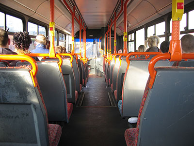

Ministarstvo finansija je pravilnikom preciziralo postupak za obveznike PDV-a u slučaju naknadne izmene poreske osnovice. Naime, isporučilac dobara dužan je da izda dokument o smanjenju PDV-a (npr.knjižno odobrenje) u sledećim slučajevima: naknadno odobreni popust kasa skonto, dobra kojima je istekao ili ističe rok trajanja, raskid ugovora, vraćanje dobara zbog neodgovarajućeg kvaliteta, promene cene.
Ukoliko se radi o povraćaju neprodatih dobara kojima nije istekao period uobičajene upotrebe, odnosno kojima nije istekao ili ne ističe rok trajanja određen od strane proizvođača, ne smatra se da je došlo do smanjenja osnovice, što znači da u ovom slučaju obveznik PDV-a koji je izvršio promet dobara ne može ispostaviti knjižno odobrenje licu kojem je taj promet izvršen. U ovom slučaju lice koje vrši vraćanje dobara treba primaocu dobara da ispostavi PDV račun u skladu sa članom 42.stav 4.zakona o PDV-u.

Zakon o radu utvđuje pravo zaposlenog na naknadu troškova za prevoz. Međutim, uslove i kriterijume ovih prava propisuje poslodavac svojim opštim aktom ili ugovorom o radu.
Ako poslodavac ne utvrdi aktima kriterijume za isplatu ove naknade (na primer udaljenost od radnog mesta), znači da je prihvatio pokriće ovih troškova bez obzira na udaljenost. U slučaju da je poslodavac organizovao prevoz zaposlenog od kuće do posla, zaposleni nema pravo na ovu naknadu, po članu 118 Zakona o radu. Ako zaposleni nije radio određeni broj dana u mesecu ima pravo na srazmernu naknadu ovih troškova za dane kada je radio.
Iznos neoporezive naknade utvrđen je do cene mesečne prevozne karte (za određenu zonu) u Javnom saobraćaju, a maksimalno do 3.612 dinara.
Najniža mesečna osnovica doprinosa utvrđuje se od strane ministra finansija, a prema članu 37. Zakona o doprinosima za obavezno socijalno osiguranje ("Sl. glasnik RS", br. 84/04, 61/05, 62/06, 5/09, 52/11, 101/11, 47/13, 108/13, 57/14, 68/14).
Najniže osnovice za plaćanje doprinosa u 2015. godini su:
U tekstu koji sledi objašnjenje su neke od situacija vezanih za ulaganje u poslovni prostor i poreski aspekt datih ulaganja:
Ovaj zakon reguliše „uzbunjivanje” tj. otkrivanje informacije o kršenju propisa, kršenju ljudskih prava, vršenju javnog ovlašćenja protivno svrsi, opasnosti po život, javno zdravlje, bezbednost, životnu sredinu, kao i radi sprečavanja štete velikih razmera. Takođe, Zakon reguliše zaštitu fizičkih lica koja izvrše uzbunjivanje u vezi sa svojim zaposlenjem, korišćenjem usluga državnih i drugih organa, poslovnom saradnjom i slično.
Svaki poslodavac je u obavezi da:
Poslodavac koji ima više od deset zaposlenih dužan je da opštim aktom uredi postupak unutrašnjeg uzbunjivanja najkasnije do 3.12.2015.godine, kao i da da na vidnom mestu, kao i na internet stranici poslodavca ako postoje tehničke mogućnosti, istakne ovaj opšti akt.
Zakon propisuje prekršajnu odgovornost za poslodavce (novčanu kazna za pravno lice 50.000-500.000 RSD i za odgovorno llice u pravnom licu 10.000-100.000RSD) u slučaju da ne izvrše obavezu obaveštavanja zaposlenih i radno angažovanih lica o pravima iz zakona, ne odrede ovlašćeno lice za prijem informacija u vezi sa uzbunjivanjem, ne donese opšti akt o postupku unutrašnjeg uzbunjivanja i sl.
Kada nerezident ostvari dividendu od rezidenta Republike Srbije, ona se oporezuje primenom stope po odbitku od 20%, osim u slučaju kada postoji ugovor o izbegavanju dvostrukog oporezivanja – kada nerezident dokazuje status rezidenta države sa kojom Srbija ima potpisan navedeni ugovor kojim je ugovorena niža stopa poreza.
Ukoliko domaće pravno lice (isplatilac dividende) ne raspolaže potvrdom o rezidentnosti u momentu isplate dividende, u obavezi je da primeni stopu poreza od 20%. Ipak, ukoliko naknadno nerezident dostavi potvrdu o rezidentnosti nadležnom poreskom organu, razlika između više plaćenog poreza i poreza koji bi bio plaćen u slučaju da je nerezident u momentu isplate prihoda imao i dostavio društvu (isplatiocu) potvrdu...
Prema Mišljenju Ministarstva finansija od 24.11.2014.godine, nerezidentni obveznik koji nadležnom poreskom organu naknadno dostavi odgovarajuću potvrdu o rezidentnosti, ima pravo da podnese zahtev za povraćaj više plaćenog poreza. Zahtev za povraćaj, preko isplatioca prihoda, nerezidentni obveznik može podneti istovremeno sa dostavljanjem potvrde kojom dokazuje status rezidenta države sa kojom je zaključen ugovor o izbegavanju dvostrukog oporezivanja.
Obzirom na složenost materije transfernih cena i brojnih dilema, u daljem tekstu navedene su neke od najčešćih situacija vezanih za datu tematiku.